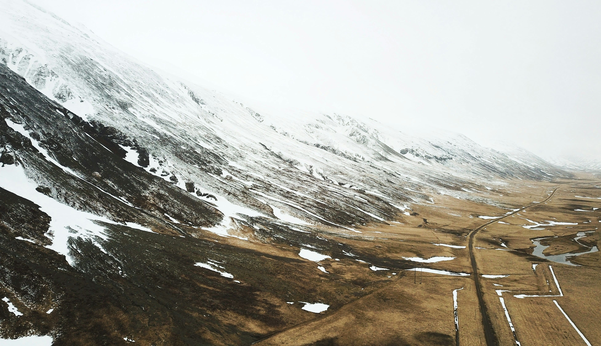

The Joy of Traveling Without a Car
The world is full of great adventures, and some of the best ones happen when you travel in ways that break free from the typical forms of transportation. Hitchhiking and bike travel offer unique opportunities to connect with the world on a more personal level. These modes of travel allow you to experience freedom, self-reliance, and sustainability in ways that cars and planes simply can’t match.
Why Choose Hitchhiking or Bike Travel?
While these alternative methods might seem daunting at first, they come with a variety of benefits that you can’t get from conventional travel. For many, the main appeal of hitchhiking and biking lies in their ability to bring travelers closer to nature, local culture, and a sense of simplicity.
For starters, both modes of travel are incredibly eco-friendly, drastically reducing your carbon footprint. In a world where sustainability is increasingly important, choosing to travel by bike or hitchhiking is one of the best ways to travel responsibly.
Moreover, both forms of transportation offer a high level of independence. You’re not reliant on timetables or bus stations; you make your own schedule. This can create a sense of empowerment, as you navigate your journey with nothing but your instincts, energy, and the kindness of strangers.
The Thrill of Hitchhiking: A Road Less Traveled
Hitchhiking is one of the most adventurous and spontaneous ways to travel. It has a rich history and, for many, offers a sense of nostalgia for the early days of travel. The excitement of standing by the side of the road, hoping for a ride, and meeting new people along the way, creates a sense of freedom that traditional travel cannot match.
But hitchhiking is not just about the thrill of the ride. It’s about the connections you make with others. Travelers who rely on this mode of transportation often find themselves in deep conversations with their drivers, learning about the lives of people from different backgrounds, cultures, and countries.
Hitchhiking also offers a different pace of travel. You’re not just passing through destinations quickly; you’re spending more time in each place, seeing the world at a slower, more intentional pace. Whether you’re in a remote village or a bustling city, hitchhiking allows you to take in your surroundings and experience them with a fresh perspective.
Tips for Safe and Successful Hitchhiking
Hitchhiking, while exciting, requires a bit of preparation and caution. Here are some tips to ensure a safe and successful journey:
- Trust your instincts: Always trust your gut feeling when choosing a ride. If something feels off, don’t hesitate to decline the offer.
- Pick safe spots: Stand in areas where drivers can safely pull over. Busy highways or rest stops are often ideal locations.
- Be friendly, but not overly familiar: Maintain a positive attitude and engage in light conversation with drivers, but don’t give away too much personal information.
- Have a plan: Know where you’re going, but be open to detours or unplanned stops. Flexibility is key!
- Pack lightly: Traveling light makes it easier to jump in and out of vehicles quickly, and reduces the risk of having to deal with heavy luggage on the road.

Disclaimer: This photo is shared for informational and educational purposes only. All rights to the original author are reserved.
The Freedom of Bike Travel: Pedal-Powered Adventures
Bike travel is another incredible way to explore the world. Whether you’re cycling through quiet backroads or exploring busy urban landscapes, traveling by bike allows you to experience destinations at a pace that feels just right. You’re not rushing past everything in a car, but you’re also not confined to the slow pace of walking.
Cycling also offers an unmatched level of freedom. You can stop and start as you please, explore hidden gems, and navigate off-the-beaten-path routes that might not be accessible by car or public transport. With just a bike and some basic gear, you can embark on long-term journeys that take you across countries or even continents.
Plus, biking is an excellent workout! Not only do you get to see the sights, but you’re also staying fit while traveling. The physical act of pedaling brings you closer to the landscape and offers a sense of connection that’s hard to replicate with any other form of transport.
Tips for Successful Bike Travel
Before you hop on your bike and head out for an adventure, keep these tips in mind:
- Plan your route: While spontaneity is part of the adventure, it’s important to know your starting point, ending point, and any major landmarks you want to hit along the way.
- Invest in quality gear: A comfortable bike and good gear can make all the difference on a long journey. Invest in durable, lightweight gear to ensure comfort and safety.
- Carry essential tools: Make sure you have a basic toolkit for bike repairs, a spare tire, and other necessities in case something goes wrong.
- Stay hydrated and fueled: Cycling can be physically demanding, so bring plenty of water and energy snacks to keep you going.
- Be aware of traffic: Always be mindful of traffic laws and road conditions. Wear appropriate safety gear, including a helmet, and stay visible on the road.
Conclusion: Embrace the Adventure of Alternative Travel
Whether you’re hitchhiking or cycling, these alternative methods of travel open up a world of possibilities. They allow you to connect with people, experience new places at a slower pace, and embrace the joy of simplicity. If you’re looking for a more sustainable, immersive, and fulfilling way to explore the world, hitchhiking and bike travel are definitely worth considering.
Remember, the journey is just as important as the destination. By choosing alternative ways of getting around, you’ll not only see more, but you’ll feel more — and create memories that last a lifetime.